01 / 공동 창작
MUSICALINUS
뮤지컬 제작소
모둠별 이야기와 음악을 연결해 한 편의 학급 뮤지컬로 완성하는 공간입니다.
자료 열기AI·디지털 수업 실천과 교사의 성장
학생의 이야기가 음악이 되는 교실.
그 배움을 읽고, 다음 수업을 준비하는
한 음악교사의 실천과 성장 기록.
IN THIS ISSUE
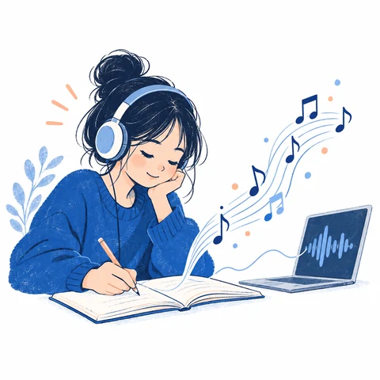
중학교 3학년 음악 수업에서 악보를 읽거나 악기를 연주하는 데 어려움이 있는 학생도 자신의 경험과 생각을 음악으로 표현할 수 있도록 ‘음악 에세이’ 수업을 설계했습니다. 학생들은 음악 감상, 가사 쓰기, AI를 활용한 음악 만들기, 비교하여 듣기, 수정하기의 과정을 반복했습니다. 완성된 작품뿐 아니라 “어떤 음악적 요소를 선택했으며, 그 이유는 무엇인가?”를 설명하도록 했습니다.
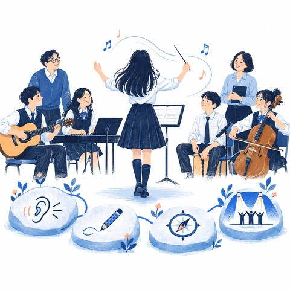
감상과 창작, 진로 탐색, 작품 공유를 하나의 수업 흐름으로 연결하여 학생이 자신의 표현 의도에 따라 선택하고 판단하도록 지원했습니다. 이를 통해 음악적 기능의 차이가 창작 활동의 참여 차이로 이어지지 않도록 하고, 학생이 자기 작품의 주인이 되는 수업을 실천하고자 했습니다.
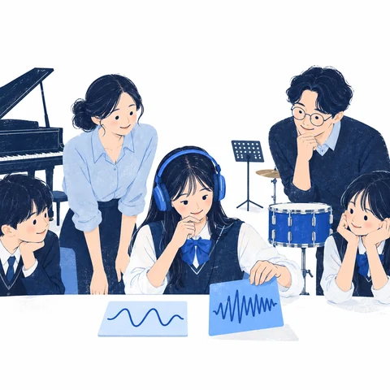
학생들이 Suno AI로 음악을 만들 때 음악의 종류, 분위기, 사용 악기, 노래하는 방식 등을 구체적으로 정하도록 했습니다. 또한 두 가지 이상의 음악을 만들어 비교하고, AI에 입력한 요청 내용과 음악을 선택한 이유를 함께 제출하도록 했습니다.
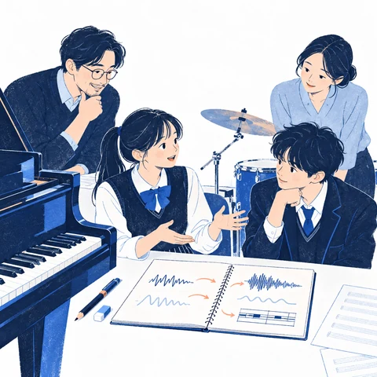
가사 초안과 수정본, AI에 입력한 내용, 만들어진 음악, 선택과 수정 이유, 가사가 담긴 영상, 활동 소감을 연결하여 살펴보았습니다. 예를 들어 후렴에 드럼이나 피아노를 추가했을 때 소리의 세기와 악기들의 어우러짐이 어떻게 달라졌는지 설명하도록 했습니다. 이를 통해 결과물의 완성도뿐 아니라 학생이 음악 개념을 이해하고 자신의 표현에 적용하는 과정을 평가하고자 했습니다.
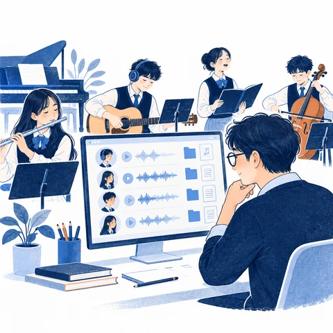
수업 중 학생들의 활동 내용과 진행 상황을 교사가 바로 확인할 수 있도록 온라인 학습 공간을 직접 개발했습니다. 학생의 활동 기록과 자료를 저장하고, 녹음이나 영상 제작 결과를 모아 보며, 필요한 내용을 엑셀 파일로 정리할 수 있도록 구성했습니다.
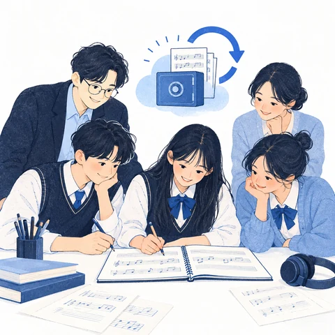
공동 창작 활동에서는 학생별 작성 내용과 수정 과정을 확인하고, 여러 학생이 함께 작업할 때 자료가 뒤섞이거나 사라지지 않도록 했습니다. 자동 저장과 이전 기록 확인 기능을 마련하고, 인터넷 연결이 불안정한 상황에서도 작성한 내용을 이어 갈 수 있도록 보완했습니다. 기술 자체보다 학생이 활동에 집중하고 교사가 배움의 과정을 살펴볼 수 있는 환경을 만드는 데 중점을 두었습니다.
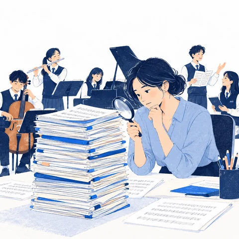
현재의 온라인 학습 공간에는 학생의 결과물과 수정 과정이 충분히 쌓이고 있습니다. 그러나 기록이 많다고 해서 학생이 음악 개념을 이해하고 선택했는지까지 알 수 있는 것은 아닙니다.
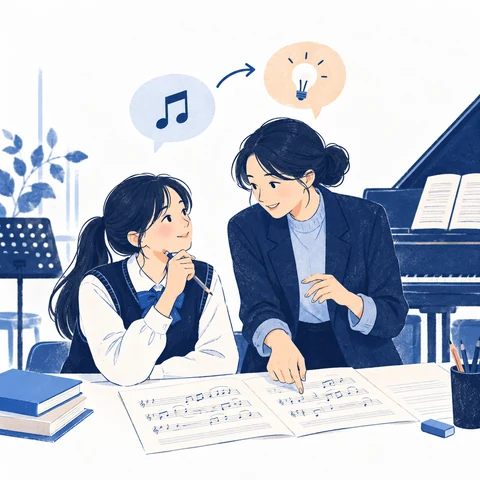
전문과정에서는 학생의 작품, 수정 내용, 평가 기준을 연결하여 살펴보는 방법을 배우고 싶습니다. 여기에 교사가 수업 중 관찰한 내용, 학생에게 던진 질문과 답변, 제공한 피드백을 함께 정리하고자 합니다. 이를 통해 “학생이 무엇을 만들었는가?”에서 더 나아가 “학생이 무엇을 이해했고, 어떤 도움이 더 필요한가?”를 판단하여 다음 수업과 개별 피드백에 반영하는 역량을 기르겠습니다.
성취기준 [9음01-04]
주제에 맞는 음악극을 만들어 표현한다.
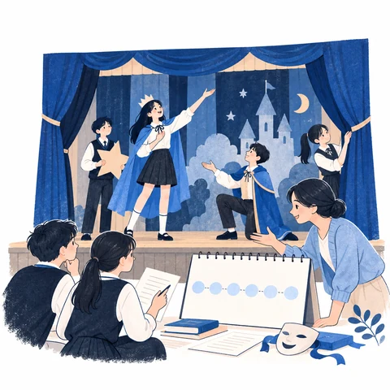
중학교 3학년 음악의 ‘음악극 만들기’ 단원을 ‘우리의 이야기를 담은 학급 뮤지컬’로 구성하여 2026년 11~12월에 6차시로 운영하겠습니다. 관련 성취기준은 ‘[9음01-04] 주제에 맞는 음악극을 만들어 표현한다.’입니다.
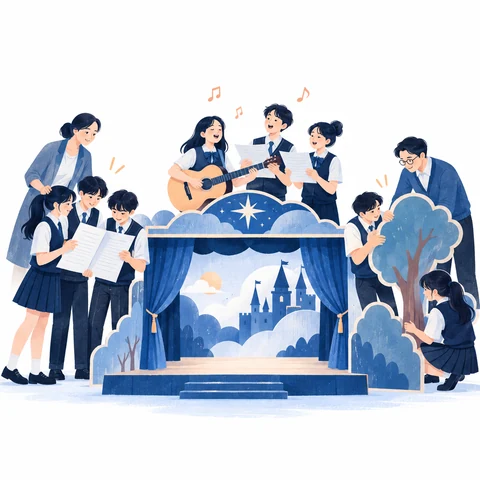
학생들은 공동의 주제에 맞는 대사, 가사, 음악을 협력하여 만들고, 음악적 요소를 선택하거나 수정한 이유를 설명하게 됩니다. 각 모둠은 뮤지컬의 한 막을 맡으며, 제가 개발한 뮤지컬 제작용 온라인 학습 공간 ‘MUSICA LINUS’에서 모둠별 작업을 연결하여 학급마다 한 편의 뮤지컬을 완성하겠습니다.
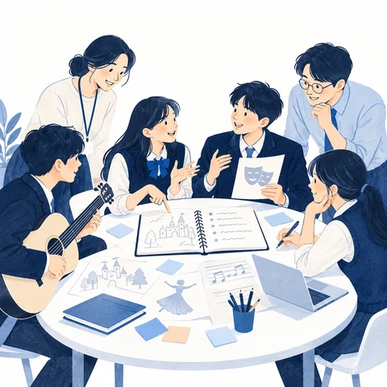
1~2차시에는 학생들의 경험에서 공동 주제를 찾고, 대본 쓰기, 작사, 작곡, 편곡, 발표 등의 역할과 배역을 나누겠습니다. 학생이 직접 쓴 대사와 가사는 초안으로 저장하여 이후 수정 내용과 비교할 수 있도록 하겠습니다.
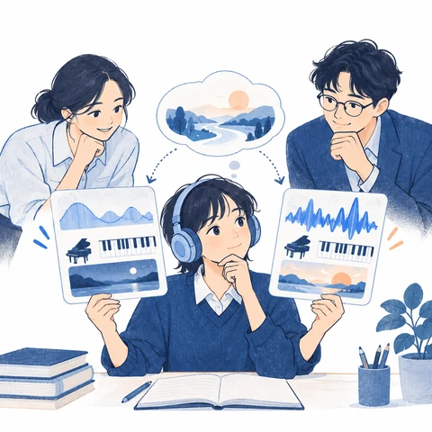
3~4차시에는 표현하려는 분위기와 사용할 악기 등을 정하여 AI로 두 가지 이상의 음악을 만들겠습니다. 학생들은 AI에 입력한 요청 내용과 실제로 만들어진 음악을 비교하며 의도한 변화가 반영되었는지 확인합니다. AI가 요청하지 않은 부분까지 바꾸었을 때도 이를 기록하고, 작품의 의도에 맞는 음악을 판단하여 선택하도록 하겠습니다.
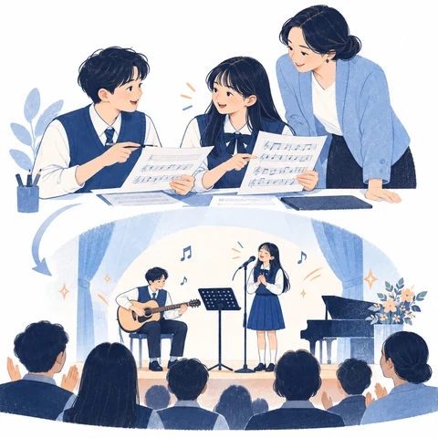
5차시에는 친구들의 의견을 반영하여 대본, 음악, 시각 자료를 수정하고 연결하겠습니다. 6차시에는 작품을 발표하고, 자신의 역할과 배운 점을 돌아보도록 하겠습니다.
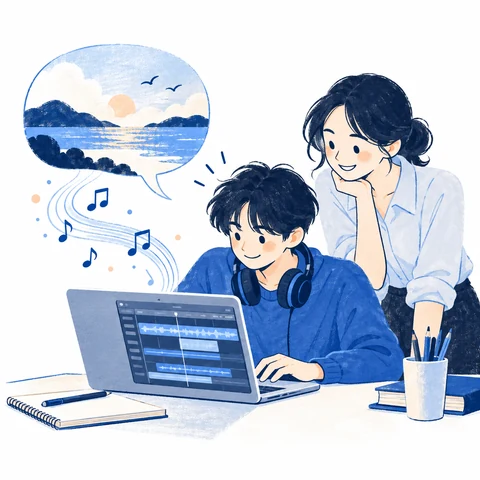
AI는 악기 연주에 익숙하지 않은 학생도 자신의 음악적 생각을 소리로 만들어 비교해 볼 수 있도록 돕는 도구로 활용하겠습니다. 온라인 학습 공간은 모둠의 협력 과정과 학생 개인의 선택 이유를 기록하는 데 활용하겠습니다.
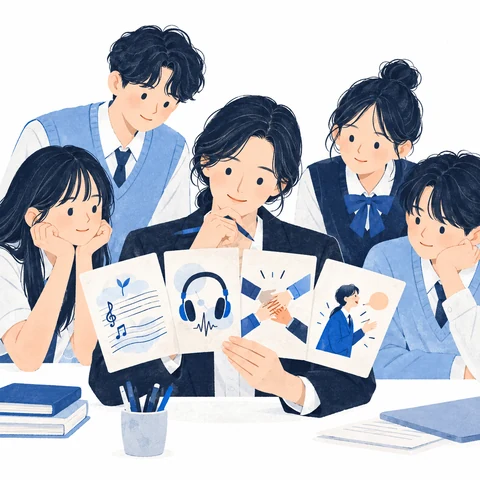
가사 초안과 수정본, 음악 비교 기록, 역할별 활동 내용, 개인별 1분 설명을 통해 학생의 배움을 확인하겠습니다. 평가는 다음 네 가지에 중점을 두겠습니다.
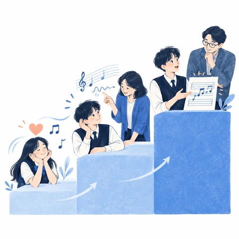
학생의 설명이 단순히 “이 음악이 더 좋다”는 수준에서 출발하여, 음악적 특징을 찾고, 표현 의도와 연결하며, 수정한 효과를 설명하는 수준으로 발전하는지 살펴보겠습니다. 활동 초기와 마지막 설명을 비교하고, 작품과 학생의 말, 수정 기록을 함께 검토하겠습니다.
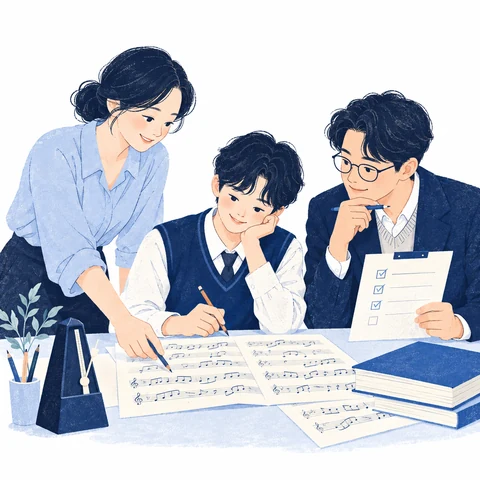
일부 작품은 동료 교사와 함께 평가하여 판단이 얼마나 일치하는지 확인하고 평가 기준을 보완하겠습니다. 설명에 어려움을 겪는 학생에게는 두 음악을 비교하여 듣게 하거나 생각을 이끌어 내는 질문을 제공하겠습니다. AI가 제시한 피드백은 교사가 검토하고 수정한 뒤 학생에게 제공하겠습니다.
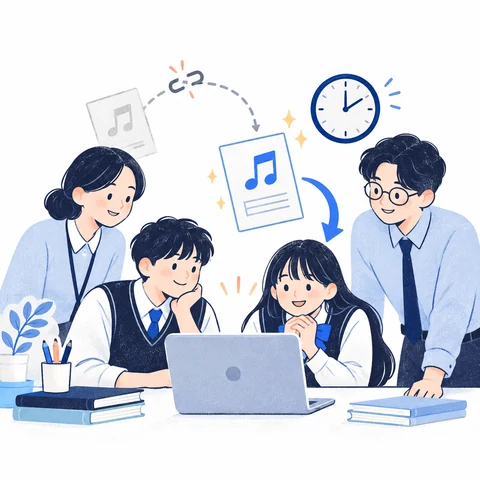
누가, 언제, 어떤 내용을 작성하거나 수정했는지 확인할 수 있도록 기록을 관리하겠습니다. 여러 학생이 동시에 작업해도 수정 내용이 덮어써지거나 같은 내용이 중복 저장되지 않도록 점검하겠습니다. 인터넷 연결이 끊겼다가 다시 연결되는 상황에서도 작성한 내용을 복구할 수 있는지 확인하겠습니다.
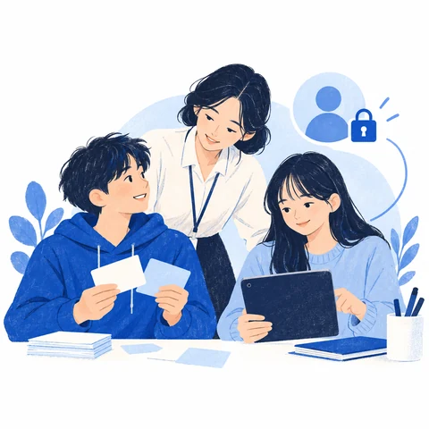
학습 기록에는 학생의 실명 대신 별도의 식별 기호를 사용하겠습니다. 기기 조작이 어려운 학생에게는 종이 기록지와 예시 카드를 제공하고, 교사가 직접 시범을 보여 모든 학생이 수업에 참여할 수 있도록 하겠습니다.
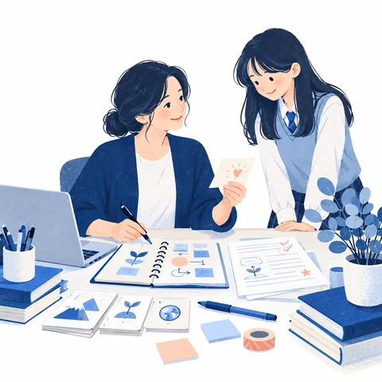
교원 AI·디지털 교육역량체계의 G영역인 ‘AI·디지털 기반 교사 전문성 개발’에 비추어 볼 때, 저의 강점은 교과 목표에 맞는 수업을 설계하고 이를 지원하는 온라인 학습 도구를 직접 만들어 활용해 온 경험입니다. 앞으로는 학생의 활동 기록에서 배움의 의미를 읽어 내고, 학생마다 필요한 피드백을 구체적으로 제공하는 역량을 더 기르고 싶습니다.
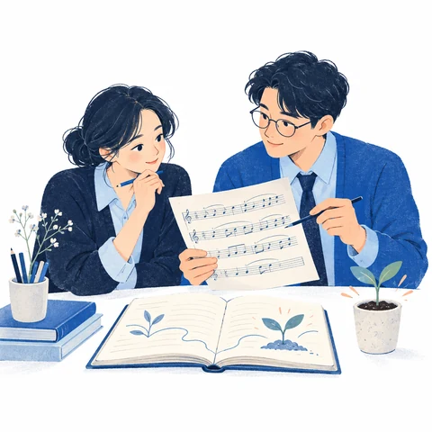
연수 초기에는 기존 수업안, 학생 작품, 평가 기준을 바탕으로 저의 수업을 돌아보겠습니다. 동료 교사와 수업 및 온라인 학습 도구의 구성을 함께 검토하고, 같은 학생 작품을 평가하며 판단의 차이를 비교하겠습니다. 이를 바탕으로 개선할 과제를 정하고, 수정 이유와 적용 결과를 수업 성찰 기록에 남기겠습니다. 수료 시에는 같은 기준으로 다시 점검하여 저의 성장과 남은 과제를 확인하겠습니다.
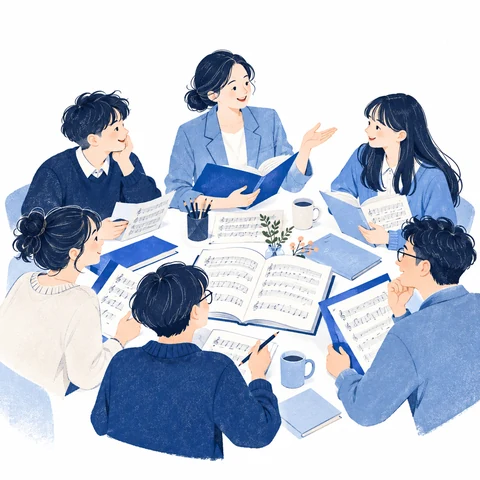
저는 도내 중등 음악교사 연구회인 디지털미래음악연구회(DFMR)의 온라인 공유 공간을 직접 구축·운영하며 수업안, 활동지, 평가 자료, 수업용 웹 도구를 동료 교사들과 나누어 왔습니다. 또한 음악 창작 수업을 공개하여 실제 수업 장면을 바탕으로 의견을 나누었습니다.
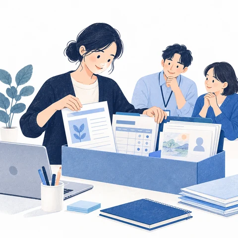
전문과정 수료 후인 2027년 1~2월에는 수업안, 도구 사용을 위한 설정 예시, 평가 기준표, 학생 개인정보를 보호한 활용 사례, 수업 운영 안내서를 정리하겠습니다. 동료 교사가 자신의 수업에 참고하여 활용할 수 있도록 검토를 마친 자료를 DFMR 온라인 공유 공간에 게시하겠습니다.
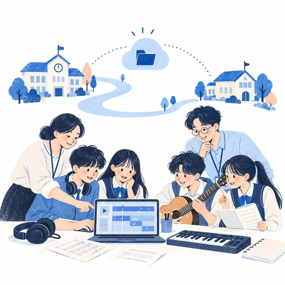
3~4월에는 희망하는 교사 및 다른 학교와 함께 수업에 적용하겠습니다. 로그인, 자료 저장, 과제 제출 등의 기능이 제대로 작동하는지 확인하고, 실제 수업에서 학생과 교사가 사용하기에 적절한지도 함께 살펴보겠습니다.
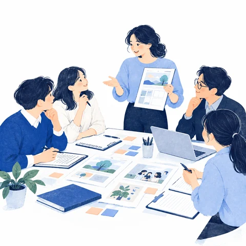
5~6월에는 활용 과정에서 나타난 어려움과 동료 교사의 의견을 모아 수업 자료와 도구를 보완하겠습니다. 무엇을 왜 수정했는지 기록하여 공유하고, 원데이 클래스와 연구회 연수를 통해 지역 교사들에게 실천 경험을 나누겠습니다.
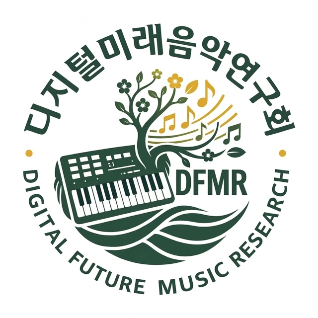
SIGNATURE SONG
함께 배우고 나누며 성장하는 디지털미래음악연구회.
우리의 이야기를 담은 시그니처송 「멜로디트리」를 감상해 보세요.
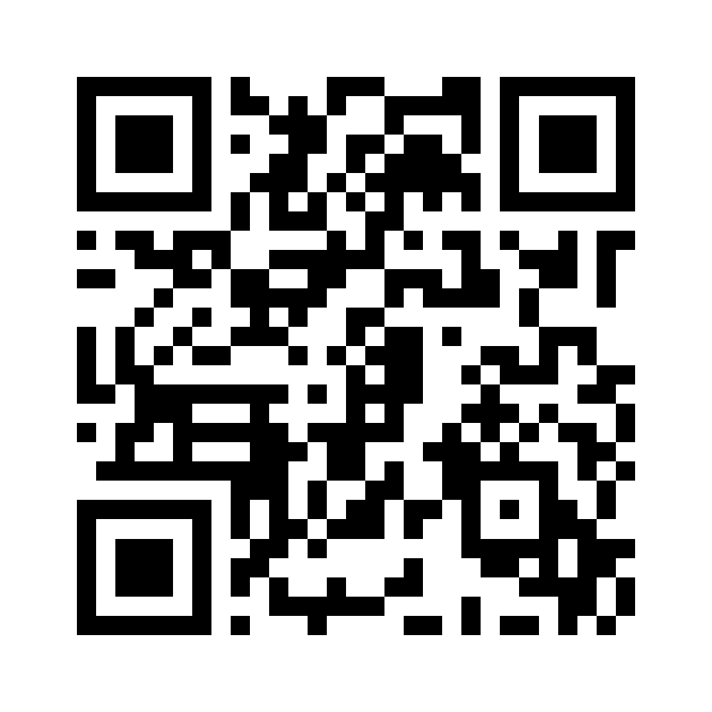
모바일로 보기휴대폰 카메라로 QR을 비추면설치·가입 없이 QR로 접속하고,
설정만 바꿔 우리 학교에 적용합니다.
뮤지컬 제작소
모둠별 이야기와 음악을 연결해 한 편의 학급 뮤지컬로 완성하는 공간입니다.
자료 열기음악과 진로를 잇는 플랫폼
음악산업을 탐색하는 수업에 활용할 수 있는 온라인 자료입니다.
자료 열기음악 감상 플랫폼
음악을 듣고 생각을 나누는 감상 활동에 활용합니다.
자료 열기통일 노래 영상
수업에서 함께 보고 들을 수 있는 통일 노래 영상입니다.
영상 보기수업 기록을 모으는 공간
학교의 수업과 활동 기록을 함께 살펴봅니다.
자료 열기작품을 만들고,
배움을 발견하고,
다시 수업을 짓습니다.